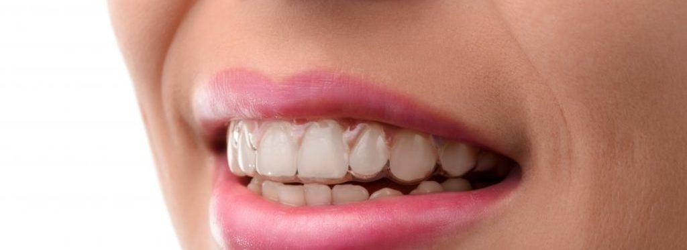
Invisalign/ Aligners
Invisalign is an orthodontic treatment that is used to align misaligned teeth. Traditionally, teeth have been aligned using fixed metal wires. Invisalign, however, consists of see-through braces known as aligners that allow your teeth to be moved discretely without anyone knowing.
Each case has a series of aligners that slowly move your teeth into position. The aligners need to be changed every 1-2 weeks, and they can be changed directly by you. Your orthodontist will however assess you approximately after every 4 weeks to ensure the teeth are moving as intended.
The treatment time varies and is case specific, but on an average a case could take anywhere from 12-18 months to complete.
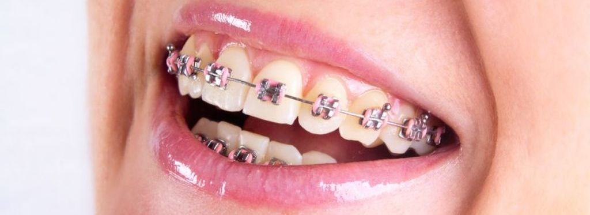
Braces
A great looking smile is your biggest tool to impress people and make a lasting impact on their minds. If you are looking for an original smile makeover, orthodontic treatment is the key as it will help you get rid of crooked and skewed teeth that affect your smile and overall appearance by properly aligning teeth for correct bite, chew and speech.
Orthodontic braces were historically associated with teenagers. Today, an increasing number of adults are choosing to wear braces to straighten their teeth and correct malocclusions (badbites). In fact, it is now estimated that almost one third of all current orthodontic patients are adults.
You can get the best orthodontic treatment at ALIGN DENTAL with the help of our in-house Orthodontist Dr. Christy Nayyar and achieve an overall enhanced appearance for a great smile. Orthodontics is a specialist branch of dentistry that is concerned with the development and management of irregularities and abnormalities in the teeth and jaws. Many people are confused as to the difference between orthodontists and dentists, but orthodontists have
undergone several years of further training in order to qualify as specialists in orthodontics. The field of orthodontics largely focuses on treatments such as tooth straightening using orthodontic braces, as well as problems pertaining to the jaw. The aim of orthodontics is to produce a healthy, functioning bite, creating higher resistance to disease processes and improving your personal appearance. Every patient needs customised treatment, planned by the orthodontist and agreed with the patient. In order to decide what treatment is required the orthodontist will need to carry out a full assessment of your teeth which is likely to include x-rays, impressions (moulds of the teeth) and photographs. There are various types of braces available at our clinic. These are broadly categorised into the following types-
Metal braces: Metal braces are the most widely used system of straitening teeth. Small metal brackets are bonded to the tooth with a wire passing through them. The wire is usually held tightly to the brackets with small elastic o-shaped rubber bands or with the help of ligature wires. The rubber bands can be transparent or colourful, depending on the patient preference. Metal brackets are very strong and can withstand most types of treatment. They tend to be the most inexpensive treatment and can treat even the most severe cases of
malalignment.
Ceramic braces: Ceramic braces are ideal for patients who want to look good during treatment but want an orthodontic option less expensive than aligners. They are similar to metal braces, but the blocks are made of a tooth-coloured ceramic material, making the braces much less noticeable.
Lingual braces: Fitted to the inside of the teeth. For any adult or teenager keen to avoid any sign of braces this is the ultimate choice as the brace itself remains hidden. These braces are custom made for each individual case so as to ensure maximum comfort and precision. Incognito lingual braces use forces generated by brackets and wires to move the teeth into the desired position. Lingual braces are finer and lighter than traditional fixed braces and they are precision engineered using the latest technology.
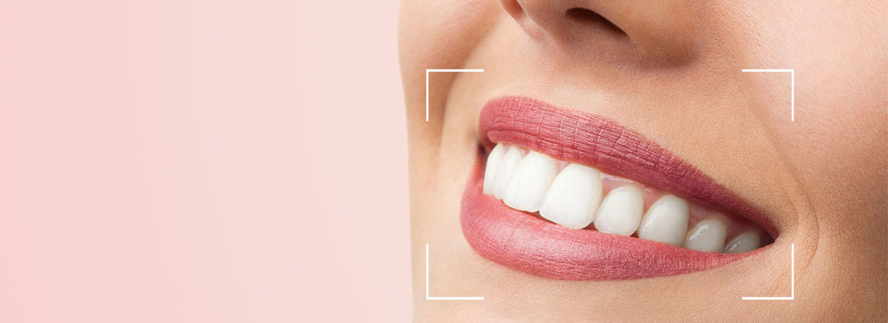
Smile design
Smile designing often consist of several treatment modalities, including but not limited to, tooth whitening, orthodontics, white fillings and veneers. This is a tailored plan and will be different for every patient. If this is something you are interested in, then during the consultation the dentist will assess your concerns, take photographs and work with you to plan a smile that works best for you and your face.
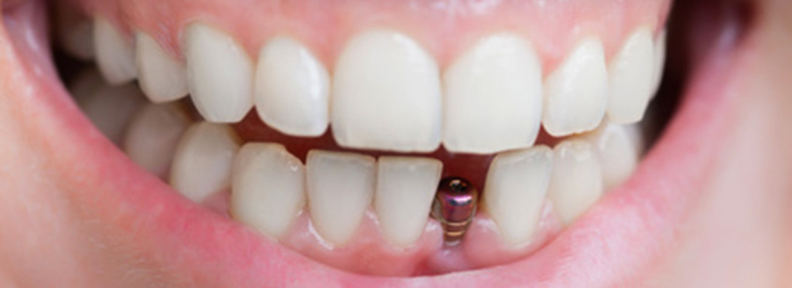
Dental implants
Dental implants are tiny prosthetics which replace the root of the tooth. These titanium posts are inserted into your jawbone and act naturally as the bone fuses around them. A tooth coloured crown is then attached to act as a missing tooth solution. For more than one missing tooth, a dental bridge can be used to replace several missing teeth. Dental implants can even be used to replace a full set of missing teeth.
There are numerous benefits to dental implant treatment that cannot be found in other methods of tooth replacement. Implant treatment normally has two stages. First, the implant is placed in the jaw. Then, after near about three to six months, when the jaw bone has healed, replacement teeth are attached to the dental implant. In some situations it is possible for temporary teeth/permanent crown to be attached to the implant at the time of insertion based on the bone quality.
However, first, it has to be decided whether implants could be the right option for you. Contact us to arrange an implant consultation and discussion and we will let you know the possibilities.
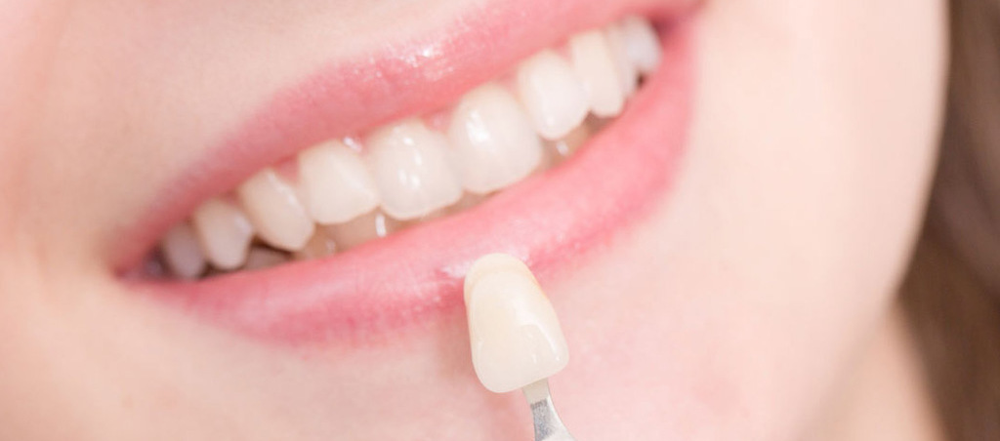
Crowns & Bridges
Sometimes teeth break in such a way that they require stronger materials to restore their structure, strength and function. Hence, crowns are used to reinforce and strengthen the damaged teeth. Crowns can be made from a variety of different materials, ranging from ceramic to gold.
One may have one or more missing teeth. They may have been extracted or may not have been present from birth. Missing teeth can often detract from appearance or
cause loss of function.
There are several ways to replace missing teeth; these include implants, bridges or dentures. There are several different types of bridges available, and they essentially use the teeth on either side of the missing tooth’s gap to close the space with a crown utilising the present teeth for support.
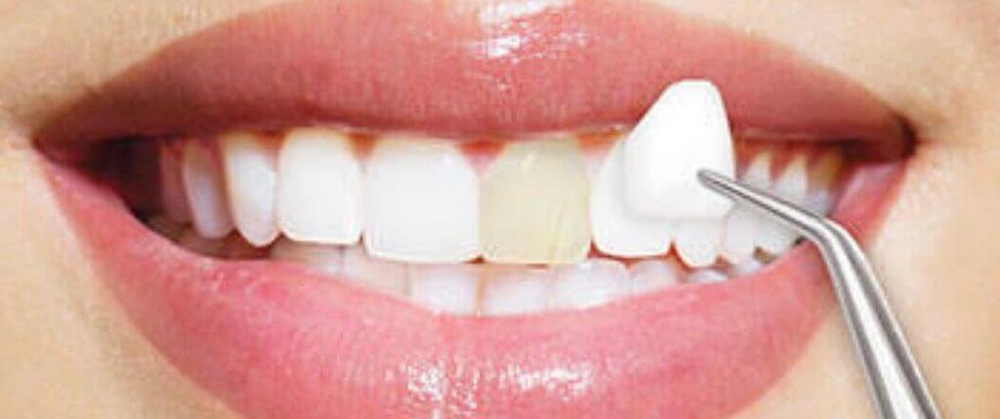
Veneers
Veneers are thin pieces of porcelain that are tooth shaped and attach to the front surface of your teeth.
They are commonly used for anterior or front teeth to enhance their shape, size and colour.
The veneers are manufactured in the laboratory, with whom we work very closely. We also ensure that you are involved in every step along the way so that we can
create a smile that you are proud to show off.
Veneers are a very sought-after cosmetic treatment; however, whether veneers are used or not depends on the underlying concern of the patient and the condition of the teeth, as, more often than not, more conservative options of treating the teeth usually suffice.
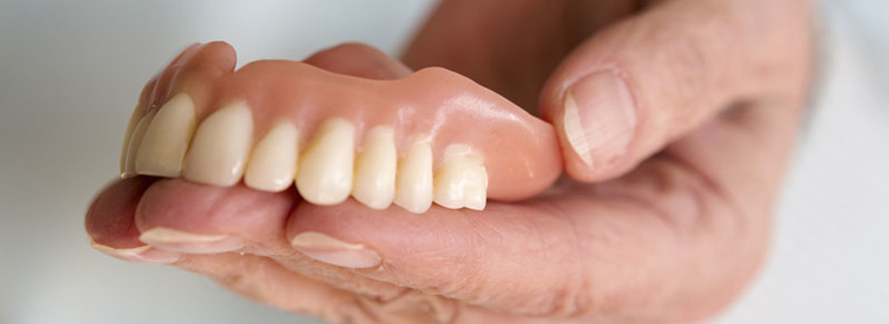
Dentures
Complete Dentures and partial dentures are removable options to replace all or few missing teeth respectively. A partial denture fills in the space created by missing teeth and fills out your smile. They are available in metal, acrylic, flexible varieties.
A complete denture helps you to chew food, a difficult task when there are no teeth. In addition, a complete denture improves speech and prevents a sagging face by providing support for lips and cheeks. It also helps to restore your overall health as a result of improved eating.
At our clinic we also provide the option of Implant supported overdentures where two or three implants are used as support for the dentures. These are especially useful when the upper or lower jaw bone is poor and causes the denture to be loose. These offer much better retention thereby improving the overall result.
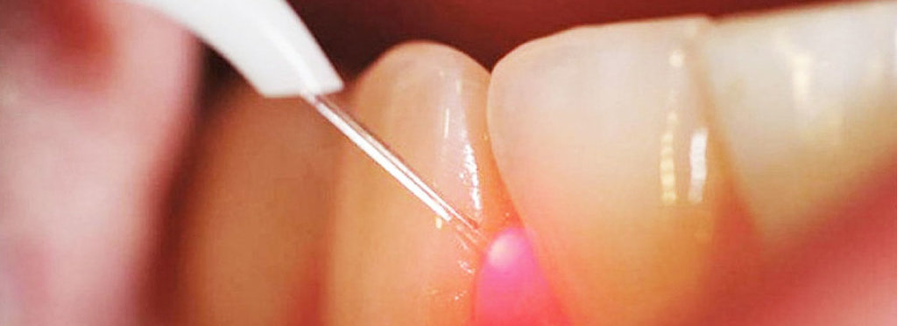
Root canal treatment
Root canal treatment is most commonly required when tooth decay spreads to the ‘nerve’ of the tooth. The bacteria enter the ‘root canal system’ of the tooth and can often cause considerable pain. Our aim is to alleviate the pain and restore the tooth back to optimal function.
Root canal treatment is when the dentist, using high-end specialised equipment, disinfects and removes the bacteria from the infected root canal system. The root canal system is then filled with a special anti-bacterial filling material.
This ensures that you become pain free and are able to function on the tooth without any further problem. The whole process is completely pain free.
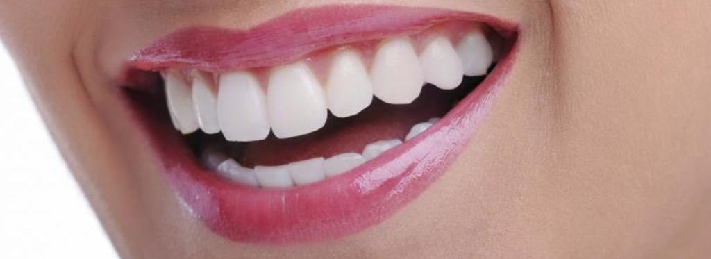
Tooth coloured fillings
Dental fillings are usually required when a tooth breaks or suffers from tooth decay. Tooth decay is a bacterial process that results in damage to the structure of the tooth. It doesn’t always cause pain, and is usually identified on oral examination of the teeth.
If tooth decay is identified, the dentist must remove this and essentially disinfect the tooth. A hole then remains which needs to be filled so that you can eat, chew and use your tooth without fear of it breaking or causing you any further problems.
No one needs to know that you have a filling, and to this end we use state-of-the-art white fillings to fill your teeth. Dentist at our clinic are trained to provide anatomically correct shaped fillings that match the colour of your existing teeth.
You will also be provided advice on preventing tooth decay so that you do not require any fillings in the future.
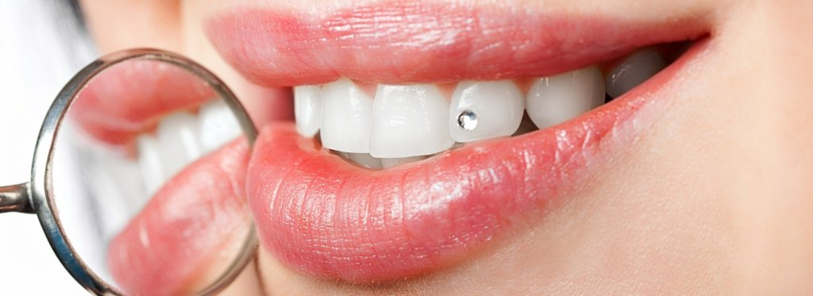
Tooth jewellery
Dental Jewellery is a brilliant way to add sparkles to your smile and stand out of the crowd. During the procedure, a jewel is fixed onto the tooth surface. The jewel does not damage tooth tissues and has no side effects – except for the increased charm of your smile! The whole procedure takes about ten minutes from start to finish giving you a dazzling smile.
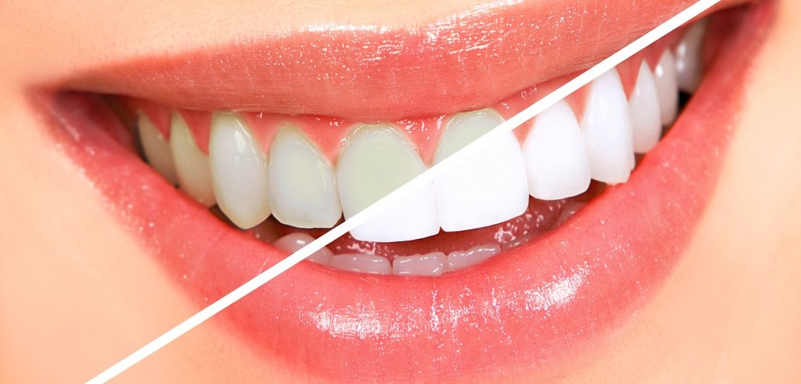
Tooth whitening
Ever wanted a whiter, brighter smile? If yes, then tooth whitening is the answer.
It is a safe procedure that initially involves a tooth bleaching agent applied directly
onto the teeth by trained dental professional in the dental clinic itself to get instant
results. It is done by having bleaching trays fabricated in the dental clinic specifically
for the patient’s teeth. All the instructions are provided clearly before commencing
with any bleaching procedure.
It is important before any whitening procedure is carried out that one gets a
thorough examination to ensure there is no dental disease that is currently active in
the mouth. Only once you are deemed to be dentally fit can you undergo aesthetic
procedures such as whitening.
Bad breath treatment
Many people are very often conscious and even embarrassed that they have ‘Bad
Breath’. Factors like acid reflux, heart burn, diabetes, antibiotics and even low
carbohydrate diets can exacerbate this and make the bad breath worse.
The cause of bad breath is often multi-factorial. But these causes can strongly
include dental problems such as poor oral hygiene, periodontal (gum) disease and
dry mouth.
Once diagnosed these factors can be combated via a combination of therapies
including Ultrasonic scale and polishing, Oral hygiene advice, Dietary and Nutritional
advice all tailored to the individual client and their diagnosis.
We provide services ranging from stain removal; scaling and polishing to a more
comprehensive deep mouth cleaning in patients suffering from gum disease.
Your gums help provide the foundations for your teeth so it is essential that they
remain healthy.
So, in cases of gum disease: Once we have your gum disease under control, our
hygienists will work with you on a maintenance plan to ensure that your mouth
continues to remain free of disease.
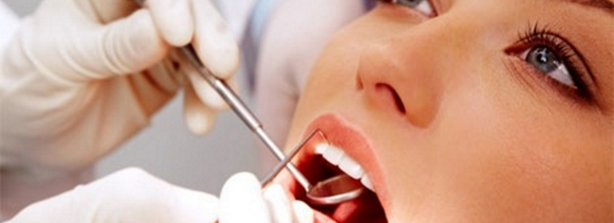
Painless extractions
Though it is always our first motive to try and preserve all teeth, sometimes some
teeth become damaged beyond repair and it becomes imperative to have the tooth
removed to prevent further complications. We strive to remove the unsalvageable
tooth in complete sterilization, whilst ensuring a pain free procedure.
Before removing any teeth we will discuss all the available replacement options and
will also discuss any temporary replacement for the missing tooth before a more
definitive treatment plan is decided upon.
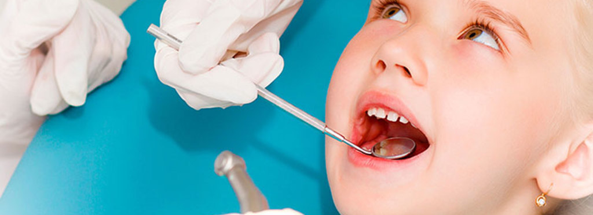
Child dental care
At Align Dental, our team of dentists, hygienists and therapists are fully trained to
look after the teeth of children.
We encourage you to bring your child as soon as the first teeth start to emerge. We
truly believe that good habits start young, so we place a big emphasis on prevention
and spend time with the child and the parent explaining correct oral hygiene and
diet habits.
Our team have all been trained in child behavioural management techniques and
are very good at acclimatising your child to the dental environment and making your
child comfortable in the dental chair.